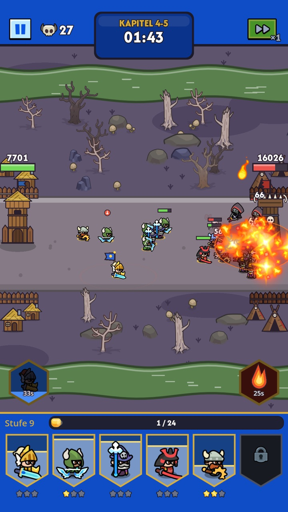
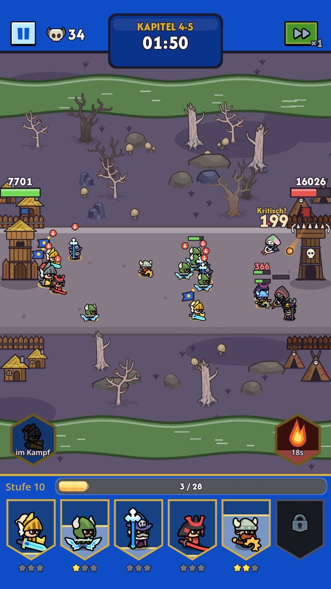

Schwarm-Schlachten
Wellen aus Goblins, Orks und Untoten prallen auf deine Armee. Halte die Linie und brich durch, sobald der Kampfrausch beginnt und jede Burg mehr Schaden nimmt.
Tiny Battle
Stell deine Armee zusammen, werte deine Helden auf und stürme die gegnerische Burg. Ein niedliches, aber taktisches Lane-Battle-Spiel – schnell gelernt, schwer gemeistert.


Nimm bis zu sechs Einheiten mit in den Kampf – vorne die Tanks, dahinter Bogenschützen und Magier.
Bei jedem Stufenaufstieg im Kampf wählst du aus drei Karten: neue Einheiten, Verbesserungen, Fähigkeiten oder Zauber. Kein Kampf läuft gleich.
Halte die Wellen auf, durchbrich die Linie des Gegners und reiß seine Burg nieder, bevor deine fällt.
Wellen aus Goblins, Orks und Untoten prallen auf deine Armee. Halte die Linie und brich durch, sobald der Kampfrausch beginnt und jede Burg mehr Schaden nimmt.
Setz deine Zauber im richtigen Moment: Feuerregen verbrennt ganze Gruppen, Eisregen friert Wellen ein, der Schlachtsegen treibt deine Truppen an. Jeder Zauber wächst mit dir.
Jeder Kampf entwickelt sich anders. Holst du eine neue Einheit, machst du deinen Samurai stärker oder schaltest eine Spezialfähigkeit frei? Seltene epische Wahlen drehen auch verlorene Kämpfe.
Sammle Einheiten-Teile in Kämpfen und Truhen, werte deine Einheiten auf und lass sie zweimal aufsteigen – sie verwandeln sich sichtbar und lernen neue Fähigkeiten. Schmiede Waffen mit Feuer, Eis, Gift, Blitz oder Licht.
Kämpf dich durch sechs Welten, von der grünen Wiese bis ins Land der Untoten und weiter, mit Bossstufen am Ende jedes Kapitels. Bau dein Dorf aus und stell dich dem Boss-Verlies.
Jeder Sieg bringt Gold, Einheiten-Teile und Material. Tägliche Aufgaben, Truhen und die Rangliste sorgen für „nur noch einen Kampf“.
18 Einheiten mit eigenen Fähigkeiten – und jede verwandelt sich beim Aufstieg zweimal. Tippe auf eine Stufe, um sie zu sehen.

Billig, schnell auf dem Feld und in der Masse gefährlich. Mit der Mistgabel gegen alles, was kommt.

Der verlässliche Frontkämpfer. Hält die Linie und schlägt zurück.

Schießt aus der zweiten Reihe und holt auch Flieger vom Himmel.

Stürmt mit Anlauf in die Gegner und durchbohrt ganze Reihen.

Feuer, Eis oder Blitz – der Magier macht Flächenschaden und setzt ganze Gruppen in Brand.

Flink, zäh und schwer zu treffen. Heilt sich mitten im Kampf selbst.

Hält deine Armee am Leben: Heilung, Schutzschilde und sogar Wiederauferstehung.

Ein Schild auf zwei Beinen. Betäubt Gegner und schützt die Truppe vor Geschossen.

Bronzeschild und Speer: im Verbund kaum zu brechen, angeschlagen am gefährlichsten.

Schlägt aus dem Schatten zu, vergiftet und erledigt angeschlagene Gegner.

Je länger der Kampf, desto wilder. Heilt sich durch Schaden und gibt nicht auf.

Klein, stur und mit einem Hammer, der den Boden beben lässt.

Ruft Geisterblitze und Ahnenheilung, verhext und verlangsamt Gegner.

Lässt Skelette für dich kämpfen und wird mit jedem gefallenen Gegner stärker.

Heiliger Krieger: betäubt, heilt seine Verbündeten und ist kaum totzukriegen.

Hält Gegner mit Wurzeln fest, ruft Mondfeuer und lässt Heilhaine wachsen.

Der Klingenmeister: ein Hieb, der Reihen spaltet, und tödlich gegen Angeschlagene.

Ein wandelnder Baumriese. Lässt den Boden beben, hält ganze Wellen mit Wurzeln fest und wächst nach.
Die ganze Kampagne ist ohne Bezahlen spielbar.
Videos nur, wenn du willst – etwa um eine Belohnung zu verdoppeln. Oder einmal „Werbefrei“ kaufen.
Spiel so viele Kämpfe, wie du willst, wann du willst.
Sicherung in der Cloud und ein Übertragungscode fürs nächste Handy.
Gerade testen wir das Spiel mit einer kleinen Gruppe über TestFlight. Der Start im App Store folgt, sobald das Feedback eingearbeitet ist – mach mit beim Betatest.
Ja, Android ist in Arbeit und folgt kurz nach dem iPhone-Start.
Nein. Bannerfall ist kostenlos. Es gibt freiwillige Käufe wie Edelstein-Pakete, einen Kampfpass und „Werbefrei“, aber alles ist auch durchs Spielen erreichbar.
Deutsch und Englisch. Das Spiel folgt der Sprache deines Geräts und lässt sich in den Einstellungen umstellen.
Bannerfall ist ein Indie-Spiel von Jakob Ehmann aus Österreich.
Schreib uns kurz, dann laden wir dich zum TestFlight-Betatest ein. Dein Feedback formt das Spiel.
Beim Betatest mitmachen